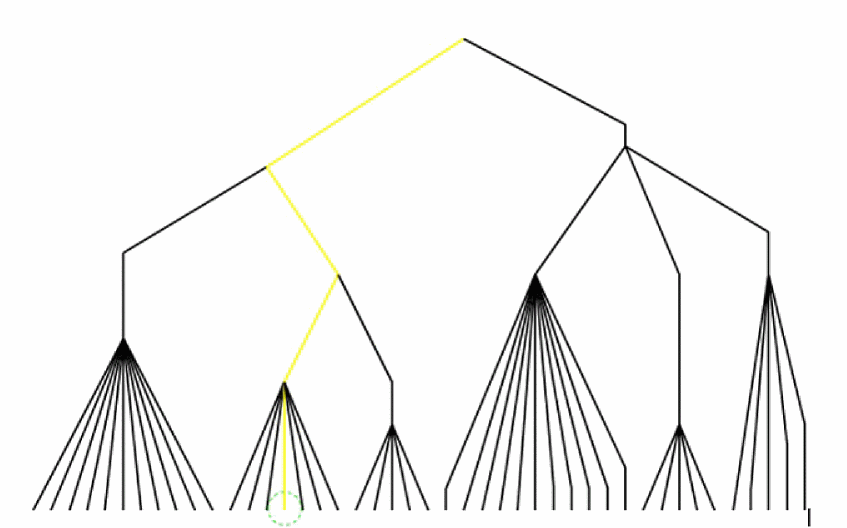
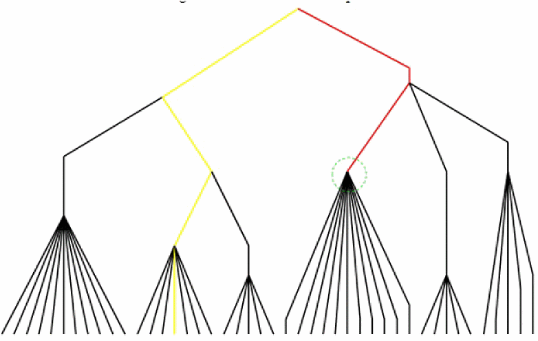
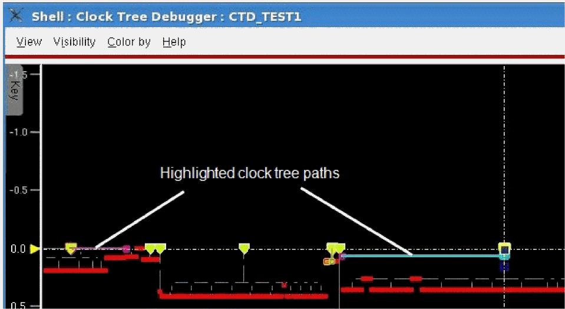

Highlighting the Clock Tree Path
The Highlight Clock Path option in the context menu of the Clock Tree Viewer highlights the complete clock tree path from the selected clock tree object to the clock root in the Clock Tree Viewer. When you select this option, the CTD traces back to find the path from the clock root to the selected node and then highlights the path in the Clock Tree Viewer. Two scenarios are detailed below.
You can also use the ctd_trace command to highlight clock tree paths in the specified color.
Scenario 1: When you select a pin
In this case, the path from the clock root to the sink will be highlighted. This is shown in the image below.

Scenario 2: When you select an intermediate node
In this case, the path from the clock root to the intermediate node (buffer, inverter, or clock gate) will be highlighted.

The highlighted path for a selected object remains highlighted even when you select another object and trace its path. So, you can view multiple paths at a time. In the image below, two paths are highlighted, one from a clock gate and the other from a flop pin.

To erase all clock tree path highlights and flight lines from the Clock Tree Viewer and the physical layout window respectively, click the Dehighlight All option in the context menu.
Return to top